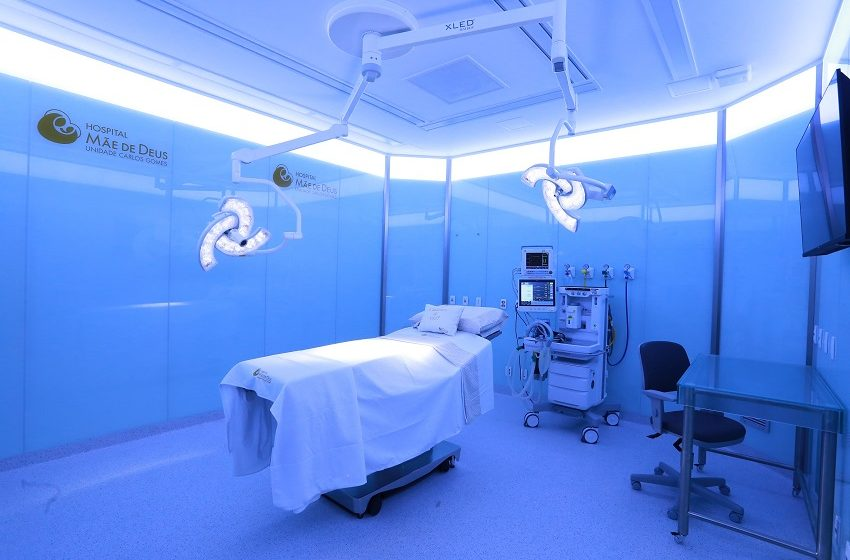

Infraestrutura e serviços
Com uma área construída de aproximadamente 55 mil m², o Hospital Mãe de Deus dispõe de 312 leitos ativos e mais de 2.000 equipamentos de tecnologia avançada. A instituição conta com uma equipe altamente qualificada, composta por mais de 2.300 médicos credenciados, oferecendo serviços em diversas especialidades médicas .

Em 2024, o hospital enfrentou desafios devido às enchentes que afetaram Porto Alegre, resultando no fechamento temporário da instituição por 45 dias. Com o apoio do BNDES, foi aprovado um financiamento de R$ 70 milhões para a reconstrução e modernização do hospital, incluindo melhorias em áreas essenciais como subestações elétricas e redes hidráulicas
Atendimneto e Agendamento
O Hospital Mãe de Deus oferece diversos canais para agendamento de consultas e exames, incluindo o aplicativo Mãe 360º, central de atendimento, WhatsApp e agendamento online .

Com esse gráfico podemos ver o nivel do mar aumentando cada vez mais a cada ano.